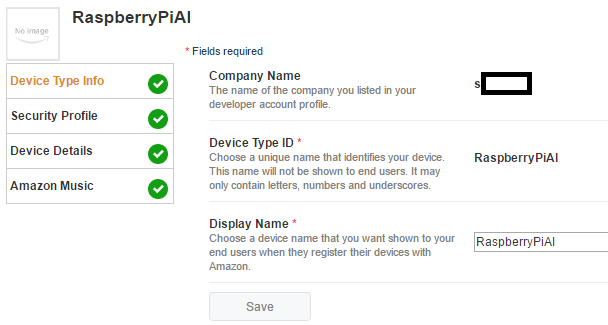
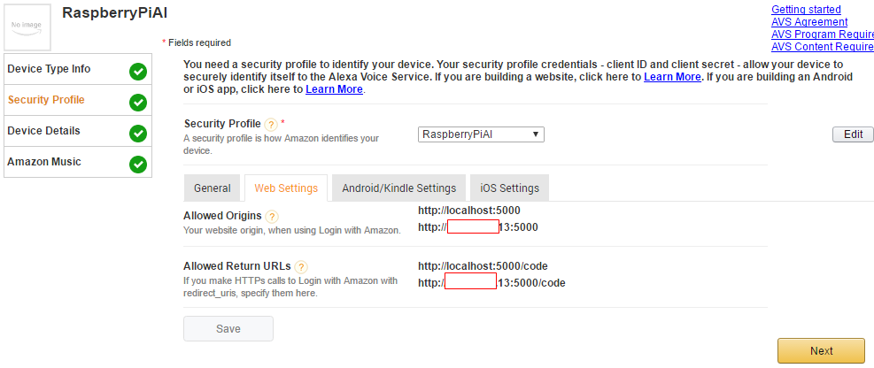
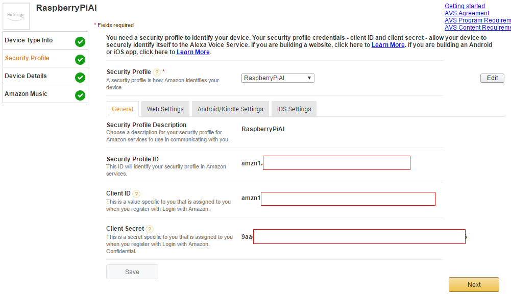
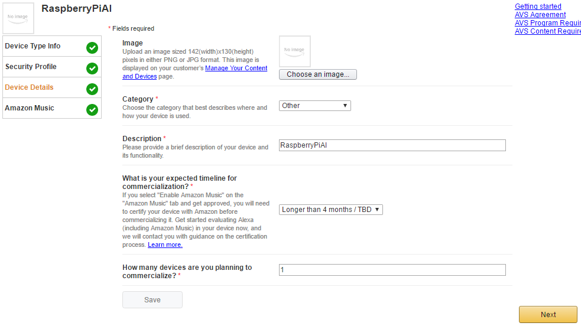
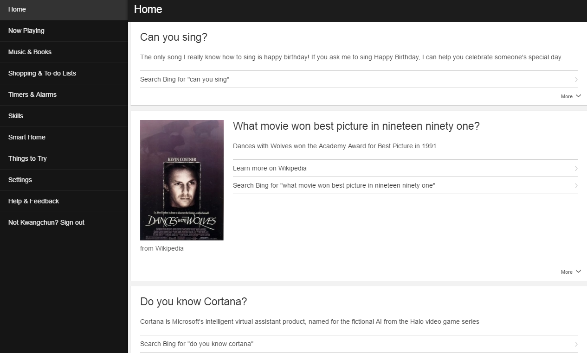

xwMOOC 컴퓨터
라즈베리파이 인공지능 – 아마존 알렉사
학습 목표
- 라즈베리파이 인공지능을 구현한다.
- 아마존 알렉사를 통해 인공지능 비서를 개발한다.
- 인공지능의 각 구성요소 및 작동방식을 이해한다.
라즈베리 파이 인공지능 동영상
| TheRaspberryPiGuy 개발동영상 | 구현 동영상 |
|---|---|
1. 라즈베리파이 인공지능
아이폰은 정말 많은 것을 바꿔 놓았으며, 전세계 기업들이 애플 아이폰처럼 누구나 갖고자 하는 기계로 이를 바탕으로 강력한 생태계를 생성하여 30% 수수료를 얻을 수 있는 플랫폼을 찾게 만드는 계기가 되었으며, 인공지능이 그 가능성 중 하나로 보고 있다. 아마존 에코(Echo)는 알렉사가 내장되어 질문에 답을 하는 인공지능 비서다.1
아마존 에코는 2016. 9월 현재 $180에 판매되고 있다. 이를 무료로 경험할 수 있다면 어떨까?
2. 라즈베리파이 인공지능 자재
2.1. 하드웨어 자재
라즈베리파이 인공지능을 만들어 보는데 하드웨어 자재와 여러 소프트웨어가 필요하다. 먼저 하드웨어 자재부터 살펴본다.
라즈베리파이 2, 3가 있으면 되고, 알렉사 명령을 제어하는데 버튼으로 감각모자를 사용한다. 또한, 인공지능 비서 알렉사 상태 정보가 감각모자 LED 화면을 통해 제공된다. 마이크를 통해 키보드나 마우스 대신 음성으로 원하는 바가 전달되고, 스피커를 통해 인공지능 비서 알렉사가 응답한 결과가 전송된다.
- 라즈베리 파이 2(알리바마): $ 36.88
- 감각모자(SenseHAT), 정품: $10.02
- 마이크(Microphone) : $7.99
- 스피커(3.5mm loud speaker): $8.39
2.2. 하드웨어 자재 전선 연결 및 꽂기
준비된 자재를 라즈베리파이 컴퓨터에 연결하여 꽂는 과정을 와이어링(Wiring)한다고 표현한다. 마우스와 키보드, 감각모자, 마이크와 스피커를 장착하는 과정은 그다지 어렵지 않다.
2.2. 소프트웨어 설치
2.2.1. 인공지능 서버쪽 소프트웨어 설정
아마존 개발자 웹사이트 (Amazon’s Developer Console)를 방문하여 회원가입하고 필요한 인증을 맞춰야 한다.
- 아마존 개발자 웹사이트에 로그인한다.
- 상기 메뉴에서 ALEXA 를 선택한다.
Register a Product Type에서Device를 선택한다.Device Type ID,Display Name을 RaspberryPiAI 로 통일한다. Security Profile에서 Web Settings 를 클릭하여Allowed Origns,Allowed Return URLs를 설정한다.http://localhost:5000,http://<라즈베리파이 IP>:5000http://localhost:5000/code,http://<라즈베리파이 IP>:5000/code
Security Profile에서 General 에 필요한 꼭 기억해야 될 정보가 나타난다. 이 정보를 라즈베리파이 클라이언트 소프트웨어 설정에 그대로 사용한다. Device Details에 기타 설정을 한다. 
2.2.2. 라즈베리파이 클라이언트 소프트웨어 설정
TheRaspberryPiGuy에서 GitHub Artificial-Intelligence-Pi를 준비해 놨다.
ifconfig 명령어를 통해 라즈베리파이 IP주소를 확인하고, 가능하면 작업 컴퓨터에서 라즈베리파이로 ssh 로그인한다.
git clone명령어를 통해Artificial-Intelligence-Pi저장소에 개발된 코드를 받아온다.cd Artificial-Intelligence-Pi명령어로 디렉토리를 변경한다.sudo ./setup.sh라즈베리파이와 아마존 알렉사를 연결한다. 인공지능 서버쪽 소프트웨어 설정에서 확인된 다음 정보를 설치과정에서 복사하여 붙여넣어 연결시킨다.- Security Profile
- Security Profile Description
- Security Profile ID
- Client ID
- Client Secret
python main.py명령어로 인공지능 비서 작업을 시작시킨다.
$ ifconfig
$ git clone https://github.com/the-raspberry-pi-guy/Artificial-Intelligence-Pi
$ cd Artificial-Intelligence-Pi
$ sudo ./setup.sh
$ python main.py 3. 라즈베리파이 인공지능 시연
현재시점에서 알렉사는 영어만 지원되고 있다. 1000명의 직원이 열심히 일을 하고 있다고 하니 다른 언어에 대한 지원도 확대될 것으로 보인다. 특히 알렉사는 기본적으로 아마존이 위치한 시애틀 인근을 상정하여 서비스를 하고 있기 때문이 이점을 염두에 두고 똑똑한 인공지능 비서로 시험을 진행한다.
아마존 알렉사 사이트를 통해 알렉사에게 문의한 내용이 결과값과 함께 쭉 나열되어 나타난다.

좌측 메뉴에 Settings 를 클릭하면, Account → Sports Update 에 가장 좋아하는 팀을 설정하여 “Alexa, what’s my Sports Update” 라고 묻게 되면 등록한 스포츠팀의 결과를 바로 알려준다.
좌측 메뉴에 Settings 를 클릭하면, Account → Calendar에서 Google 계정을 연동시키게 되면 일정정보가 공유되어 알렉사가 개인비서로서 역할을 자연스럽게 수행하게 된다.